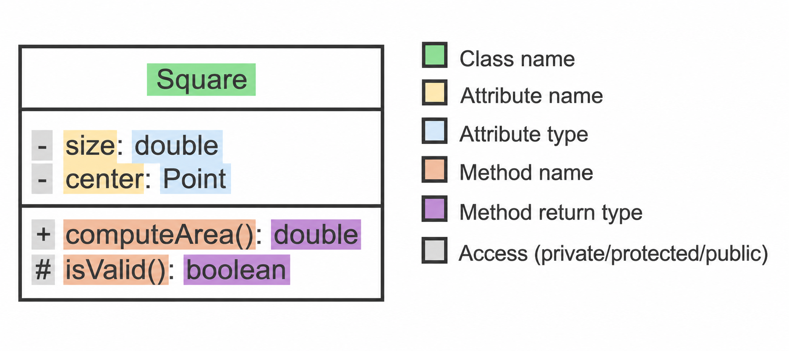
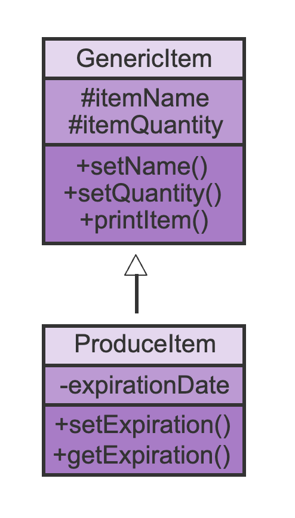

Inheritance and Polymorphism
Liting Zhang
University of West Florida
Today's Roadmap
Chapter 8 shows how related classes can share code and still behave differently.
UML diagrams: reading classes and inheritance relationships visually.
Is-a vs. has-a: deciding whether inheritance is the right design.
Derived classes: using
extendswith a clear base class and subclass.Access control: understanding why private fields stay private.
Overriding and
super: changing behavior without rewriting everything.The
Objectclass andtoString().Polymorphism: one reference type, different actual object types.
Reading focus: Chapter 8, Inheritance and Polymorphism
What You Should Be Able To Do
Read a simple UML class diagram.
Choose between an is-a relationship and a has-a relationship.
Write a basic derived class using
extends.Explain what a subclass inherits and what it cannot directly access.
Use
@Overridewhen replacing inherited behavior.Use
superto reuse base-class constructors or methods.Explain how a base-class reference can point to a derived-class object.
Main question for the chapter: what relationship are we modeling?
What UML Class Diagrams Show
UML stands for Unified Modeling Language.
A UML class diagram gives a compact picture of a class.
The top part shows the class name.
The middle part shows attributes / fields.
The bottom part shows methods.
Symbols such as
+and-show access.

UML class diagram example. Credit: zyBook.
Class Relationships: Is-a and Has-a
Once we know how to read a class diagram, we can talk about relationships between classes.
Is-a: one class is a more specific version of another class.
Restaurantis aBusiness.CoffeeShopis aRestaurant.
Has-a: one object contains or owns another object.
Restauranthas menu items.Restauranthas customer reviews.
Use inheritance only for a real is-a relationship.
Use fields or ArrayLists for a has-a relationship.
Composition Example: Restaurant Has Menu Items
Composition means one class stores another object as part of its data.
import java.util.ArrayList;
public class RestaurantMenuComposition {
static class MenuItem {
private String name;
private int priceDollars;
public MenuItem(String name, int priceDollars) {
this.name = name;
this.priceDollars = priceDollars;
}
public String getDescription() {
return name + " $" + priceDollars;
}
}
static class Restaurant {
private String name;
private ArrayList<MenuItem> menu = new ArrayList<MenuItem>(); // Restaurant has menu items
public Restaurant(String name) {
this.name = name;
}
public void addMenuItem(String itemName, int priceDollars) {
menu.add(new MenuItem(itemName, priceDollars)); // add one object to the menu list
}
public void printMenu() {
System.out.println(name + " menu:");
for (MenuItem item : menu) {
System.out.println("- " + item.getDescription());
}
}
}
public static void main(String[] args) {
Restaurant cafe = new Restaurant("Campus Cafe");
cafe.addMenuItem("Sandwich", 8);
cafe.addMenuItem("Soup", 5);
cafe.printMenu();
}
}example:
RestaurantMenuComposition.java
Inheritance Definition
Inheritance means a derived class starts with the members of a base class.
The base class contains the shared idea.
The derived class adds details that make it more specific.
In code, Java uses
extends.A derived object can use inherited public methods.
Restaurant is a Business, so Restaurant can inherit common business behavior.
UML for Inheritance
- A solid line with a closed, unfilled arrowhead indicates a class is derived from another class
The arrow points toward the more general class, also called the base class or superclass.
The lower class is the more specific class, also called the derived class or subclass.
If a class name or method name appears in italics, UML is showing something abstract.

UML inheritance diagram. Credit: zyBook.
Base Class and Derived Class
Java uses the keyword extends to create a derived class.
A base class is also called a superclass.
A derived class is also called a subclass.
The derived class inherits members from the base class.
The derived class can add new fields and methods.
Java classes can directly extend only one base class.
Inheritance Example: Business and Restaurant
This program creates one base object and one derived object.
public class RestaurantInheritance {
static class Business {
private String name;
private String address;
public void setName(String name) {
this.name = name;
}
public void setAddress(String address) {
this.address = address;
}
public String getDescription() {
return name + " -- " + address;
}
}
static class Restaurant extends Business { // Restaurant is a Business
private int rating;
public void setRating(int rating) {
this.rating = rating;
}
public int getRating() {
return rating;
}
}
public static void main(String[] args) {
Business store = new Business();
Restaurant cafe = new Restaurant();
store.setName("ACME");
store.setAddress("4 Main St");
cafe.setName("Friends Cafe");
cafe.setAddress("500 W 2nd Ave");
cafe.setRating(5);
System.out.println(store.getDescription());
System.out.println(cafe.getDescription());
System.out.println("\nRating: " + cafe.getRating());
}
}
example:
RestaurantInheritance.java
Inherited Members and New Members
The Restaurant class inherits public behavior from Business and adds restaurant-specific behavior.
Inherited from
Business:setName(),setAddress(),getDescription().Added in
Restaurant:rating,setRating(),getRating().A
Businessobject cannot callsetRating()because that method only exists inRestaurant.
Inheritance Avoids Duplicate Code
Without inheritance, similar classes often repeat the same fields and methods.
A store, restaurant, and hotel may all have a name and address.
Those shared members belong in a common base class.
Each derived class keeps only the fields and methods that make it different.
Less duplicate code usually means fewer places to fix the same bug.
Inheritance Scenarios
Use inheritance only when the sentence sounds natural.
Restaurantis aBusiness. Inheritance may make sense.CoffeeShopis aRestaurant. Inheritance may make sense.MenuItemis not aRestaurant. A restaurant has menu items.Reviewis not aRestaurant. A restaurant has reviews.If the relationship is has-a, use a field or collection instead of
extends.
Private Fields Are Still Private
Inheritance does not mean the derived class can directly touch every field.
A derived object contains inherited data as part of the object.
But the derived class cannot directly access the base class's private fields.
Use public methods from the base class to read or update private data safely.
This keeps encapsulation from Chapter 7 intact.
Example: Private Field Access Error
The derived class tries to use a private base-class field directly.
public class AccessModifierBroken {
static class Business {
private String name;
public void setName(String name) {
this.name = name;
}
}
static class Restaurant extends Business { // Restaurant is a Business
public void printNameDirectly() {
System.out.println(name); // compiler error: name is private in Business
}
}
public static void main(String[] args) {
Restaurant cafe = new Restaurant();
cafe.setName("Campus Cafe");
cafe.printNameDirectly();
}
}
The fix is not to make everything public.
The better fix is to add or use an appropriate public method.
example:
AccessModifierBroken.java
Access Modifiers in Inheritance
Access modifiers decide where a member can be used.
| Modifier | Beginner meaning |
|---|---|
private | Only code inside the same class should directly use it. |
protected | Derived classes can use it, but use carefully. |
public | Other code may use it as part of the class interface. |
| no modifier | Package-level access. We usually avoid relying on this in beginner examples. |
Keep fields private unless there is a strong reason not to.
Expose useful behavior through public methods.
Protected Access: Use Carefully
protected can make base-class members available to derived classes.
It is useful when a derived class really needs direct access to shared implementation details.
It also weakens information hiding compared with private fields.
For beginner class design, prefer private fields plus public or protected helper methods.
Do not change fields to
protectedjust to avoid writing accessors.
Overriding Replaces Inherited Behavior
Overriding means the derived class provides its own version of an inherited method.
The method name is the same.
The parameter list is the same.
The return type must be compatible.
The derived version is used when the actual object is the derived type.
Use
@Overrideso the compiler checks that you really are overriding.
Overriding Example: Business Type
The derived class provides its own version of an inherited method.
public class RestaurantOverride {
static class Business {
public String getType() {
return "Business";
}
}
static class Restaurant extends Business { // Restaurant is a Business
@Override
public String getType() {
return "Restaurant";
}
}
public static void main(String[] args) {
Business basicPlace = new Business();
Restaurant cafe = new Restaurant();
System.out.println(basicPlace.getType());
System.out.println(cafe.getType());
}
}example:
RestaurantOverride.java
Using super: Reuse Base-Class Code
Sometimes the derived method should reuse the base method and add more information.
public class SuperDescription {
static class Business {
private String name;
private String address;
public Business(String name, String address) {
this.name = name;
this.address = address;
}
public String getDescription() {
return name + " -- " + address;
}
}
static class Restaurant extends Business { // Restaurant is a Business
private int rating;
public Restaurant(String name, String address, int rating) {
super(name, address); // call Business constructor
this.rating = rating;
}
@Override
public String getDescription() {
return super.getDescription() + "\nRating: " + rating; // reuse base description
}
}
public static void main(String[] args) {
Restaurant cafe = new Restaurant("Friends Cafe", "500 W 2nd Ave", 5);
System.out.println(cafe.getDescription());
}
}example:
SuperDescription.java
Overriding and Overloading Are Different
These two words sound similar, but they describe different ideas.
Overriding: same method signature in a derived class.
Overloading: same method name but different parameter list.
Overriding is about inheritance behavior.
Overloading is about choosing among methods by argument types and counts.
Use
@Overrideonly for overriding, not overloading.
Every Class Inherits from Object
In Java, every class ultimately inherits from Object.
If a class does not explicitly extend another class, it still extends
Objectindirectly.Objectprovides methods such astoString()andequals().The default
toString()output is usually not very helpful when reading program output.Overriding
toString()makes object output readable.
toString() Example: Readable Object Output
When an object is printed, Java automatically calls toString().
public class ToStringOverride {
static class Business {
private String name;
private String address;
public Business(String name, String address) {
this.name = name;
this.address = address;
}
@Override
public String toString() {
return name + " -- " + address;
}
}
static class Restaurant extends Business { // Restaurant is a Business
private int rating;
public Restaurant(String name, String address, int rating) {
super(name, address); // call Business constructor
this.rating = rating;
}
@Override
public String toString() {
return super.toString() + ", Rating: " + rating;
}
}
public static void main(String[] args) {
Business store = new Business("AAA Business", "5 Race St");
Restaurant tacoShop = new Restaurant("Tom's Tacos", "600 Pleasure Ave", 5);
System.out.println(store); // calls store.toString()
System.out.println(tacoShop); // calls Restaurant toString()
}
}
Printing
storecallsstore.toString().Printing
tacoShopcalls the derived class version.example:
ToStringOverride.java
Why Polymorphism Matters
Polymorphism lets us write code using a general type, while Java still runs behavior from the actual object type.
Inheritance gives us related classes, such as
BusinessandRestaurant.Overriding lets a derived class replace a method from the base class.
Polymorphism combines these ideas.
The same method call can behave differently for different actual objects.
Business place = new Restaurant("Friends Cafe", 5);
System.out.println(place.getDescription()); // can run the Restaurant versionReference Type vs. Object Type
In polymorphism, one variable can involve two different types.
Business place = new Restaurant("Friends Cafe", 5);
// reference type: Business
// object type: Restaurant| Type | Meaning |
|---|---|
| Reference type | The type written for the variable. Here, it is Business. |
| Object type | The type created by new. Here, it is Restaurant. |
This works because
Restaurantis aBusiness.The reference type controls what method names the compiler allows.
The object type controls which overridden method runs at runtime.
The Two-Step Rule
When Java sees a method call on a polymorphic reference, two checks happen.
Business place = new Restaurant("Friends Cafe", 5);
System.out.println(place.getDescription());Compile time: Java checks the reference type.
Does
Businesshave a method namedgetDescription()?If yes, the code is allowed to compile.
Runtime: Java checks the actual object type.
The object is actually a
Restaurant.If
RestaurantoverridesgetDescription(), Java runs theRestaurantversion.
Small Polymorphism Example
This example uses a Business reference to point to a Restaurant object.
public class SimplePolymorphism {
static class Business {
public String getDescription() {
return "General business";
}
}
static class Restaurant extends Business {
@Override
public String getDescription() {
return "Restaurant with rating";
}
}
public static void main(String[] args) {
Business place = new Restaurant();
System.out.println(place.getDescription());
}
}The reference type is
Business.The object type is
Restaurant.The output is
Restaurant with ratingbecause the actual object is aRestaurant.example:
SimplePolymorphism.java
Why Use a Base-Class List?
Polymorphism is useful when we want one list to hold different but related object types.
A
Businesslist can holdBusinessobjects.It can also hold
Restaurantobjects because aRestaurantis aBusiness.The loop can use the shared method name, such as
getDescription().Each object can still run its own overridden version.
ArrayList<Business> directory = new ArrayList<Business>();
directory.add(new Business("City Library"));
directory.add(new Restaurant("Friends Cafe", 5));
for (Business place : directory) {
System.out.println(place.getDescription());
}Polymorphism Example: Business Directory
This program stores both a general business and a restaurant in the same list.
import java.util.ArrayList;
public class BusinessDirectoryPolymorphism {
static class Business {
private String name;
public Business(String name) {
this.name = name;
}
public String getDescription() {
return name;
}
}
static class Restaurant extends Business {
private int rating;
public Restaurant(String name, int rating) {
super(name);
this.rating = rating;
}
@Override
public String getDescription() {
return super.getDescription() + " (rating " + rating + ")";
}
}
public static void main(String[] args) {
ArrayList<Business> directory = new ArrayList<Business>();
directory.add(new Business("City Library"));
directory.add(new Restaurant("Friends Cafe", 5));
for (Business place : directory) {
System.out.println(place.getDescription());
}
}
}The list stores
Businessreferences.The second object is actually a
Restaurant.Java chooses the correct
getDescription()version at runtime.example:
BusinessDirectoryPolymorphism.java
Base-Class References and Derived-Only Methods
A base-class reference can only call methods that are available through the base-class type.
Business place = new Restaurant("Friends Cafe", 5);
place.getDescription(); // OK: Business has getDescription()
place.getRating(); // Error: Business does not have getRating()getDescription()works because the method exists inBusiness.If
RestaurantoverridesgetDescription(), theRestaurantversion can still run.getRating()does not work because it only exists inRestaurant.The compiler checks the reference type before the program runs.
Polymorphism Rule to Remember
Polymorphism has one compile-time rule and one runtime rule.
| Question | Who decides? |
|---|---|
| Can I call this method? | The reference type |
| Which overridden version runs? | The object type |
Business place = new Restaurant("Friends Cafe", 5);
place.getDescription(); // allowed by Business, runs Restaurant versionThe compiler cares about the variable type.
The running program cares about the actual object type for overridden methods.
Debugging Inheritance and Polymorphism Code
When inheritance or polymorphism code fails, check one idea at a time.
Check whether the relationship should be is-a or has-a.
Check whether the method belongs to the reference type.
Check whether the method is overridden with the same name and parameter list.
Check whether a field is private and should be accessed through a method.
Check whether
supershould be used to reuse base-class behavior.
A helpful question:
What type does the compiler see?
What type is the actual object?Key Takeaways
UML class diagrams show class names, fields, methods, and relationships.
Inheritance represents an is-a relationship.
Composition represents a has-a relationship.
A derived class uses
extendsand inherits members from a base class.Private base-class fields are not directly accessible in the derived class.
Overriding lets a derived class replace inherited behavior.
superlets derived code reuse base-class constructors or methods.Polymorphism lets Java choose the correct overridden method at runtime.